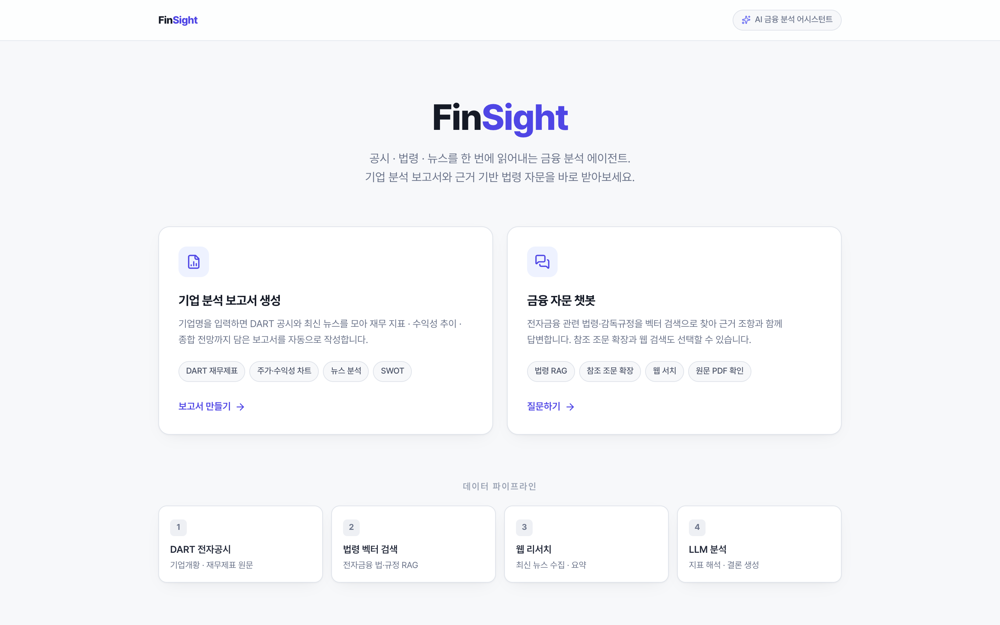

01KT K intelligence 해커톤 2025 - Track 1: AI Agent 개발
금융 분석 에이전트
Finsight
프로젝트 소개
공시·재무제표·뉴스와 금융 법령을 함께 살펴야 하는 애널리스트의 기업 조사를 돕는 AI 서비스입니다. 대회에서 개발한 서비스를 바탕으로, 대회 이후 개인 프로젝트로 분석·검색·채팅 기능을 개선했습니다.
구현 내용
- 공시와 재무제표, 시세, 뉴스를 수집해 기업 분석 보고서를 만듭니다. 주요 수치와 차트, 기사 출처를 함께 제공합니다.
- 법령과 내규를 검색해 관련 조문을 근거로 답변합니다. 채팅에서 기업 분석, 법령 검토, 뉴스 요약을 함께 요청할 수 있습니다.
본인 기여
- 대회에서 기업 분석 보고서 생성 기능을 맡았습니다. 공시·재무제표·뉴스 수집부터 분석과 차트 생성까지 LangGraph로 연결하고, 사용자가 기사 출처를 확인할 수 있도록 구현했습니다.
대회 이후
개인 개선
- LLM이 재무 수치를 추출하고 계산하던 방식을 DART API와 Python 처리로 바꿨습니다. 계산값을 보고서 문장에 연결하고 근거 검증과 재작성 단계를 추가했습니다. 16개 기업의 주요 재무 수치를 공시와 대조하고, 검증을 통과하지 못한 문장은 결과에서 제외하도록 했습니다.
- 법령을 조문 단위로 저장하고 인용·위임 관계를 그래프로 연결했습니다. 키워드·의미 검색과 재정렬에 그래프 탐색을 결합해 시행령과 별표까지 근거를 찾도록 했습니다. 별표의 표 구조를 복원하고 위임 관계를 법령 API와 대조해 검색에 반영했습니다.
- 질문에 따라 기업·법령·뉴스 작업을 나누고, 필요한 작업을 병렬로 실행한 뒤 근거를 모아 답변하는 채팅 기능을 개발했습니다. 기업명이 모호하면 다시 묻고, 처리 과정과 답변을 실시간으로 표시하도록 구현했습니다.
- 검색과 답변 품질을 비교할 평가 데이터와 실행 도구를 구성했습니다. 평가 과정에서 발견한 연간 실적 계산 오류를 수정하고, 정정 공시 반영과 문서 교체 실패 시 데이터 보존을 보완했습니다. 회귀 테스트와 프론트엔드 빌드도 GitHub Actions로 자동화했습니다.
성과
우수상 (63팀 중 3위)
대회 당시 구현 화면

사용 기술